-
Check Out and Build Trunk
-
Export
trunk/sandbox/seam-tutorial-jbt32.
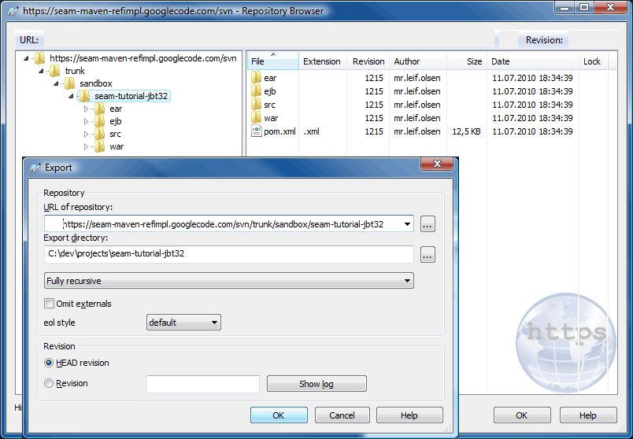
-
Activate Development Mode
In brief: Copy src/main/filters/filter-prod.properties to src/main/filters/filter-dev.properties.
Modify filter-dev.properties:
- Set the property
jdk.debug to true.
- Set the property
jdk.optimize to false.
- Set the property
app.debug to true.
- Set the property
app.unpack.modules to true.
- Point the
as.home property to the directory where you installed JBoss AS.
jdk.debug =true
jdk.optimize =false
app.debug =true
app.unpack.modules=true
as.home =C:/dev/server/jboss-4.2.3.GA-jdk6
-
Open a command shell, navigate to your project directory and run:
mvn install eclipse:eclipse
-
Configure Eclipse and Create Workspace
-
Install Plugins and Configure Workspace
Note: You can not use Maven 3, see Maven 3 issue later in this work log.
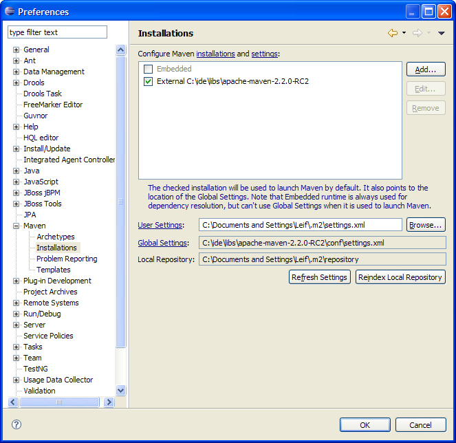
-
Import a Mavenized Seam Project into Eclipse
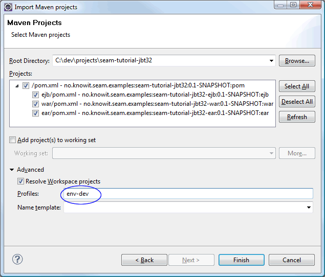
The following build error appears in the console after import:
Build errors for seam-tutorial-jbt32-ear; org.apache.maven.lifecycle.LifecycleExecutionException:
Failed to execute goal org.apache.maven.plugins:maven-ear-plugin:2.4.2:generate-application-xml
(default-generate-application-xml) on project seam-tutorial-jbt32-ear: Failed to initialize JBoss configuration
m2eclipse uses Maven3 internally even if we have configured Eclipse to use en external Maven 2.2.x installation,
so this the same build error as we will get running mvn install from a command shell using Maven 3.
The bug is reported in JIRA: http://jira.codehaus.org/browse/MNG-2971.
-
Maven3 Issue:
Maven3 does not evaluate external properties during the "ear:generate-application-xml" goal.
In a portable build we want Maven to generate the application.xml and jboss.app.xml
resource files based on property values stored in an external properties file. This works perfect i in
Maven-2 but fails in Maven-3:
<plugin>
<groupId>org.apache.maven.plugins</groupId>
<artifactId>maven-ear-plugin</artifactId>
<version>2.4.2</version>
<configuration>
<finalName>${app.context}-ear</finalName>
<displayName>${app.display.name}</displayName>
<description>${app.description}</description>
<!--
MNGECLIPSE-1541:
During the import of a mavenized ear project (File > Import... > General > Maven Projects)
an application.xml file is generated in src/main/application/META-INF/application.xml.
https://issues.sonatype.org/browse/MNGECLIPSE-1541
MNGECLIPSE-2145:
Generated application.xml doesn't contain final names
https://issues.sonatype.org/browse/MNGECLIPSE-2145
To fix this we excludes the eclipse generated application.xml during mvn package
-->
<earSourceExcludes>**/application.xml</earSourceExcludes>
<!-- Use maven generated application.xml -->
<generateApplicationXml>true</generateApplicationXml>
<version>5</version>
<defaultLibBundleDir>lib</defaultLibBundleDir>
<encoding>UTF-8</encoding>
<jboss>
<!--
To trigger the generation of the jboss-app.xml file you need to
configure the 'jboss' element. see:
http://maven.apache.org/plugins/maven-ear-plugin/usage.html and:
http://maven.apache.org/plugins/maven-ear-plugin/examples/generating-jboss-app.html
-->
<version>${as.version}</version>
<loader-repository>
<!--
seam.jboss.org is a Seam-specific scoped classloader. It acts as
a way for Seam to disassociate artifacts bundled with the
application from those that exist within the JBoss application
server's shared artifacts or JARs (for example, those that
reside in the default server's lib directory or in JBoss's
general lib directory).
The classloader is referenced in jboss-app.xml for EAR deployment and and in
jboss-web.xml for WAR deployment (SiA-2.5.3-p63).
see: http://www.jboss.org/community/wiki/classloadingconfiguration
see: http://www.mastertheboss.com/en/jboss-application-server/141-jboss-classloader.html
-->
seam.jboss.org:loader=${app.context}-ear
</loader-repository>
<data-sources>
<data-source>META-INF/ds/${ds.xml}</data-source>
</data-sources>
</jboss>
<archive>
<manifest>
<addClasspath>true</addClasspath>
<addDefaultImplementationEntries>true</addDefaultImplementationEntries>
</manifest>
<manifestEntries>
<Build-Machine>${env.COMPUTERNAME}</Build-Machine>
<Url>${project.url}</Url>
</manifestEntries>
</archive>
</configuration>
</plugin>
Properties are externalized to filter-*.properties file and read into maven using
org.codehaus.mojo:properties-maven-plugin.
Running e.g. mvn install in Maven 3 gives the following error:
[ERROR] Failed to execute goal org.apache.maven.plugins:maven-ear-plugin:2.4.2:generate-application-xml
(default-generate-application-xml) on project mvn3-problem-ear: Failed to initialize JBoss configuration:
Invalid JBoss configuration, version[${as.version}] is not supported. -> [Help 1]
The bug is reported in JIRA: http://jira.codehaus.org/browse/MNG-2971.
-
JBoss Tools 3.2 Issue:
web.xml: All comments are stripped after project import, must restore original web.xml
from svn (not an issue with JBoss Tools 3.1).
-
m2eclipse issues:
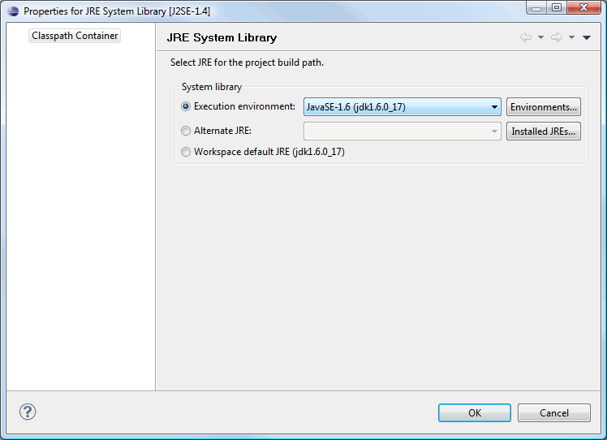
Select Workspace default JRE
-
JBoss Tools (or m2eclipse?) issue:
The EAR module's src/application folder should be source folder.
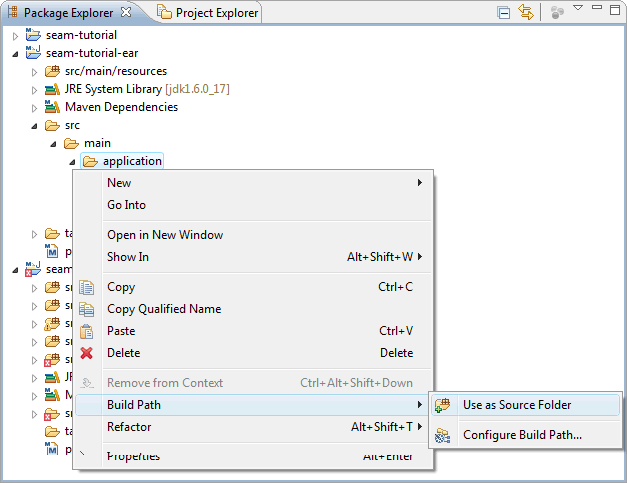
-
JBoss Tools issue:
Schema validation for some resource files fails due to use of Maven property placeholders. The target resource
files should be correct, so they are the files that should be validated.
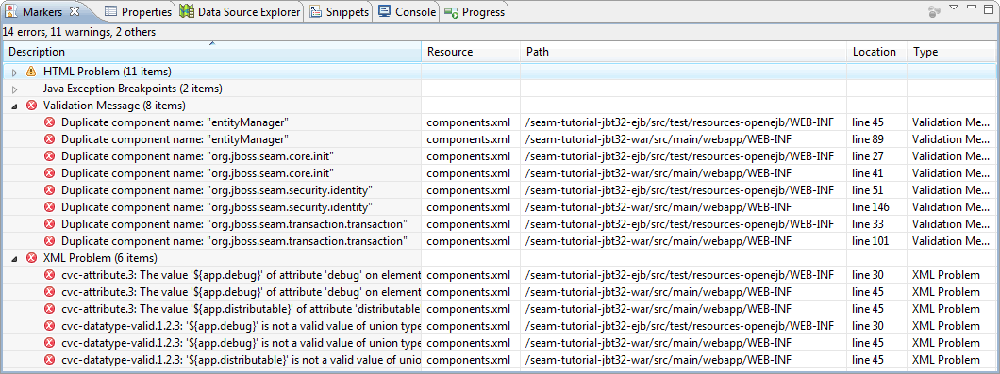
-
EAR Deployment assembly
JBoss Tools 3.2 Issues:
-
seam-tutorial-ejb module has wrong naming: seam-tutorial-ejb.ejb.
Should be named seam-tutorial-ejb.jar
-
Resource files should be published from the EAR target folder due to filtering of resource
files and generating of
application.xml and jboss.app.xml
during the Maven generate-sources goal.
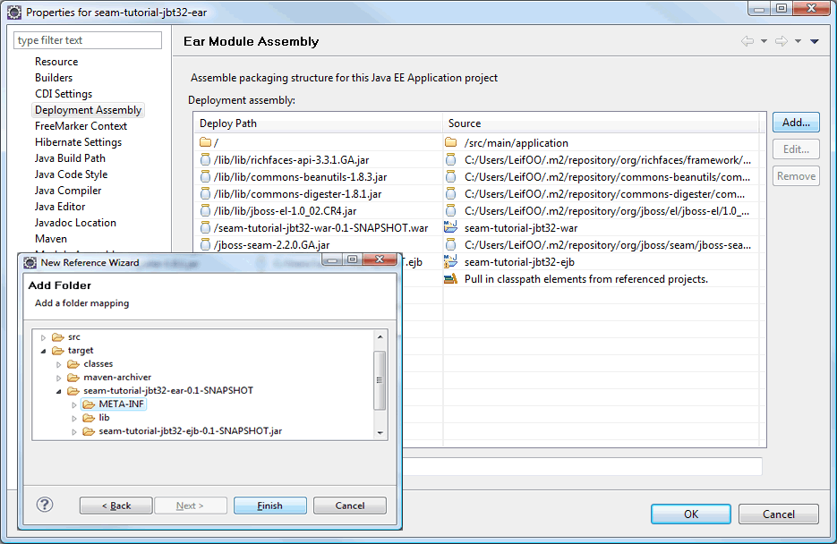
Rename seam-tutorial-ejb.ejb to seam-tutorial-ejb.jar
Delete src/main/application
Add folder target/seam-tutorial-jbt32-ear-0.1-SNAPSHOT/META-INF
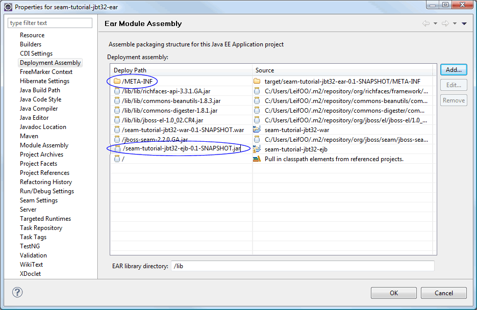
Corrected Deployment Assembly
-
Web Deployment assembly
JBoss Tools 3.2 Issue:
Resource files should be published from WAR target folder due to filtering of resource
files during the Maven generate-sources goal.
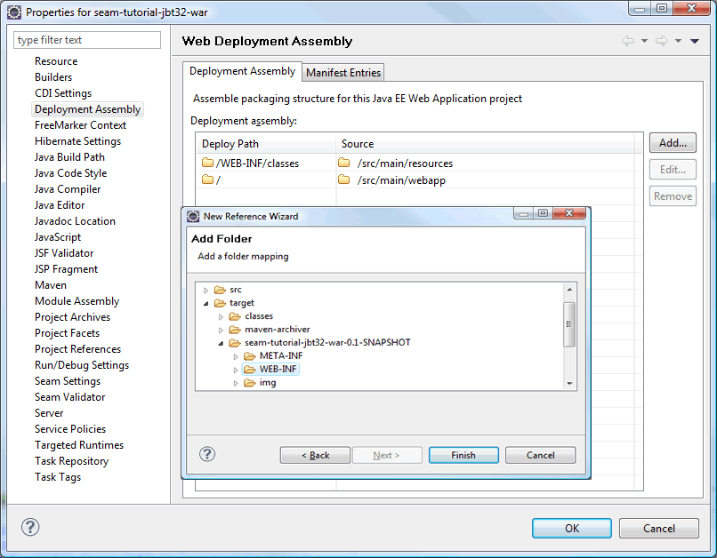
Add folder target/seam-tutorial-jbt32-war-0.1-SNAPSHOT/WEB-INF
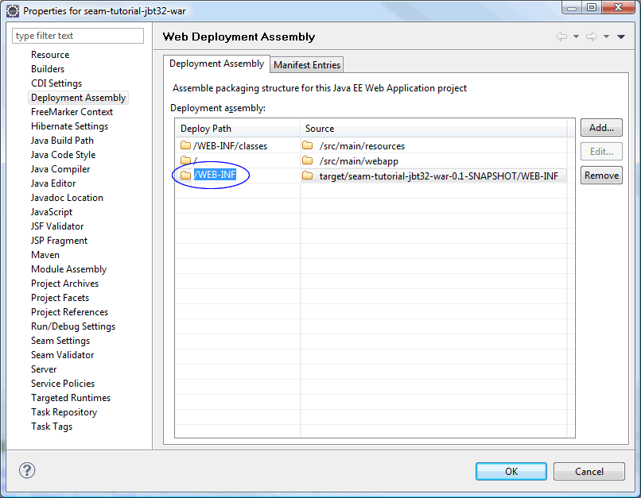
Corrected Deployment Assembly
-
EJB Deployment assembly
Do we need to make any modifications here? Looks like resource files are published from target?
-
Add EAR project to WTP server
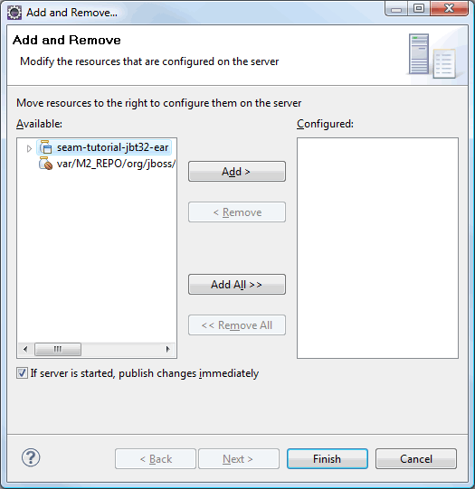
-
Publish
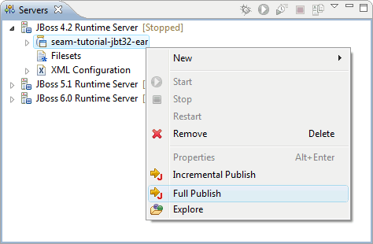
JBoss Tools 3.2 Issue:
Seam jar is published to a separate folder but should be published to ear root folder.
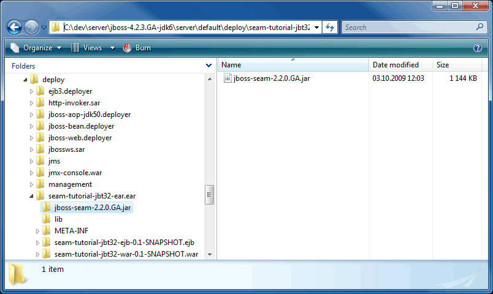
We must correct this before we can start the server.
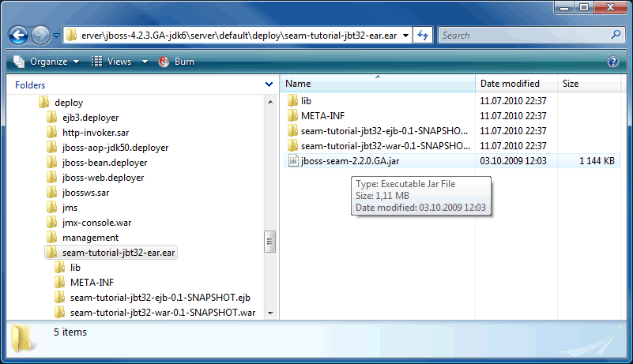
The server starts without erros.
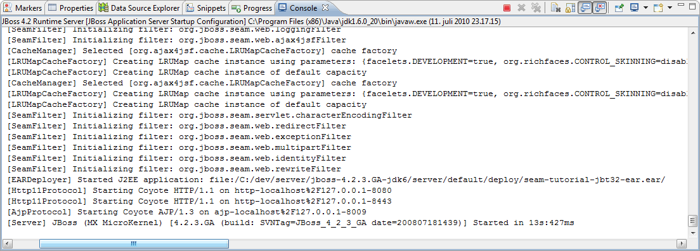
Browse the application at http://localhost:8080/jbt32tutorial/.
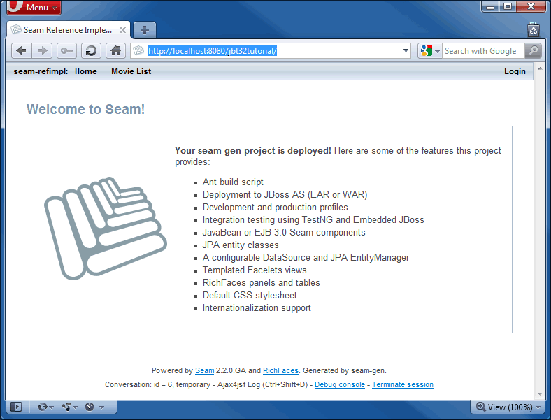